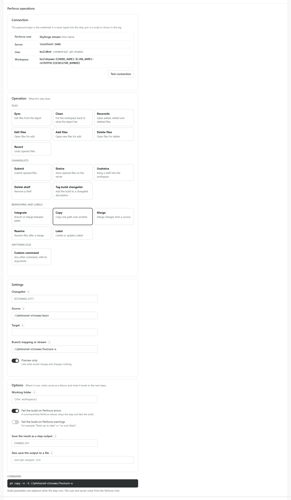

Copy a stream (Main to Drop)
Promote a tested build from //skyforge/main to the release stream //skyforge/drop with a build that copies and submits.
Before you start
- Two streams, for example the parent
//skyforge/mainand the target//skyforge/drop. The Drop stream is a child of Main, so a copy goes up the flow. - A Perforce root whose Stream is the target,
//skyforge/drop. The copy opens files in the workspace, so the workspace must be on the target stream. - A build user that may submit to
//skyforge/drop.
Steps
- Create a build configuration
Promote to Drop. Under Settings › Version Control choose Perforce root and pick the root on//skyforge/drop. - Go to Settings › Build steps and add Perforce operations. Name it
Copy Main to Drop. - Click the Copy card.
- In Branch mapping or stream type
//skyforge/drop. In Source type//skyforge/main. The Command box now showsp4 copy -S //skyforge/drop -P //skyforge/main. - Set Preview only on the first time, to see what would be copied. Run it once, read the log, then turn it off.
- Add a second Perforce operations step,
Submit the copy. Click the Submit card. In Description typePromote main to drop (build ${BUILD_NUMBER}). - Click Save, then Run.

Check it worked
- The log of step 1 shows
$ p4 copy -S //skyforge/drop -P //skyforge/mainand the files opened. - The log of step 2 shows
$ p4 submit -d ...andP4: Step output CHANGELIST = ...with the new changelist. - In the Submitted changes tab, the new changelist is on
//skyforge/drop.
Troubleshooting
| You see | What to do |
|---|---|
| Nothing to copy | Drop is already the same as Main. The submit step then fails with No files are open; that is the correct result. |
| The step says it needs a source and a target | Fill in Branch mapping or stream, or both Source and Target paths. |
| Submit fails with a permission error | The build user needs write access to the target stream in the Perforce protections table. |